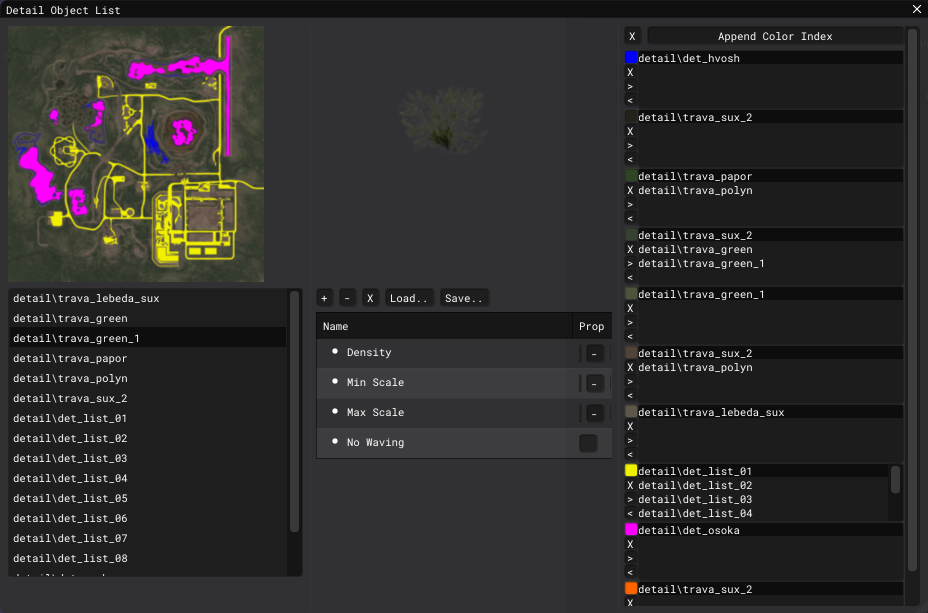

Level Editor - Detail Object List Window
About
This window creates the relationships between the color slots (terrain_mask) and Detail Objects.

Interface
Right column
Terrane mask texture and list of added Detail Objects.
Middle column
Model of the selected Detail Object and its properties
Buttons
| Name | Description |
|---|---|
| + | Add an object to the list of Detail Objects |
| - | Delete an object from the list of Detail Objects |
| X | Clear the entire list of Detail Objects and color slots |
| Load | Load *.dti file |
| Save | Save *.dti file |
Detail Object Properties
| Name | Description |
|---|---|
| Density | |
| Min Scale | |
| Max Scale | |
| No Waving |
Left column
Color slots
General Buttons
| Name | Description |
|---|---|
| X | Clear the list of color slots |
| Append Color Index | Create a new color slot |
Color Slots Buttons
| Name | Description |
|---|---|
| X | Delete a color slot |
| > | Adds the selected Detail Object to the color slot |
| < | Removes the selected Detail Object from the color slot |